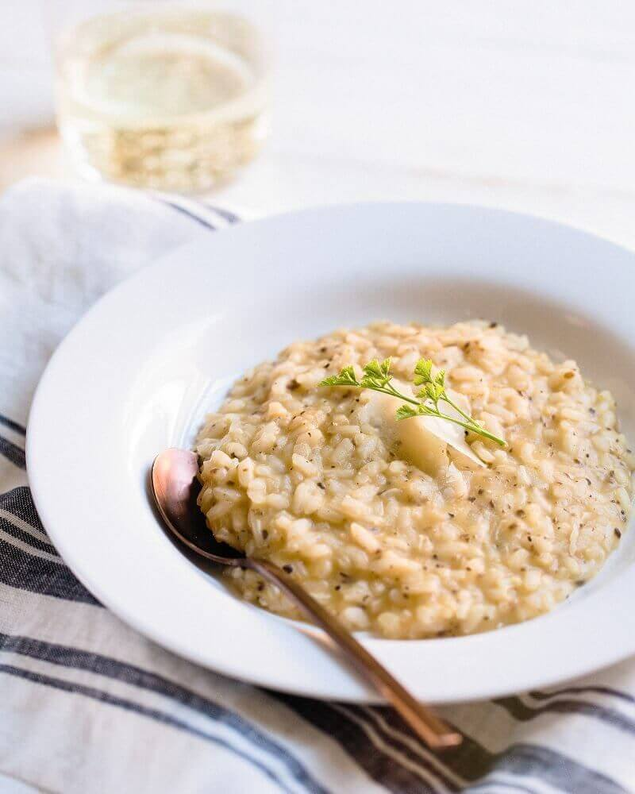

Rissoto Recipe

Description
Making a beautiful risotto is so easy! All it takes is a little love and care and this base recipe.
Ingredients
- 1 litres organic stock , such as chicken, fish, vegetable
- 1 large onion
- 2 cloves of garlic
- ½ a head of celery
- 90 g Parmesan cheese
- 2 tablespoons olive oil
- unsalted butter
- 400 g risotto rice
- 2 wine glasses of dry white vermouth (dry Martini or Noilly Prat) or dry white wine
Steps
- Heat the stock. Peel and finely chop the onion and garlic, trim and finely chop the celery. Finely grate the Parmesan.
- In a separate pan, heat the oil and 1 small knob of butter over a low heat, add the onions, garlic and celery, and fry gently for about 15 minutes, or until softened but not coloured.
- Add the rice and turn up the heat – the rice will now begin to lightly fry, so keep stirring it. After 1 minute it will look slightly translucent. Add the vermouth or wine and keep stirring — it will smell fantastic. Any harsh alcohol flavours will evaporate and leave the rice with a tasty essence.
- Once the vermouth or wine has cooked into the rice, add your first ladle of hot stock and a good pinch of sea salt. Turn the heat down to a simmer so the rice doesn’t cook too quickly on the outside.
- Keep adding ladlefuls of stock, stirring and almost massaging the creamy starch out of the rice, allowing each ladleful to be absorbed before adding the next. This will take around 15 minutes. Taste the rice — is it cooked? Carry on adding stock until the rice is soft but with a slight bite. Don’t forget to check the seasoning carefully. If you run out of stock before the rice is cooked, add some boiling water.
- Remove the pan from the heat, add 1 knob of butter and the Parmesan, then stir well.
- Place a lid on the pan and allow to sit for 2 minutes – this is the most important part of making the perfect risotto, as this is when it becomes outrageously creamy and oozy like it should be. Eat it as soon as possible, while the risotto retains its beautiful texture.
Return to main page